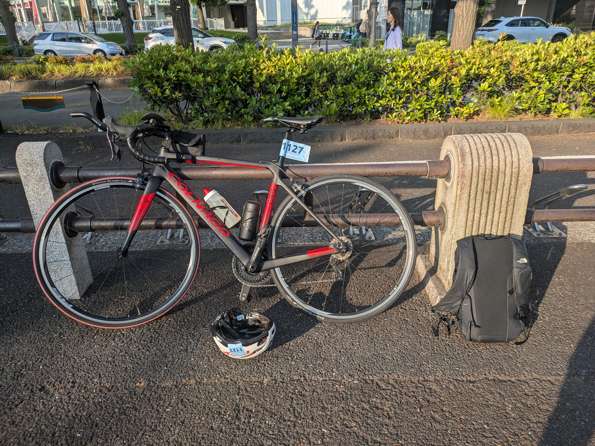
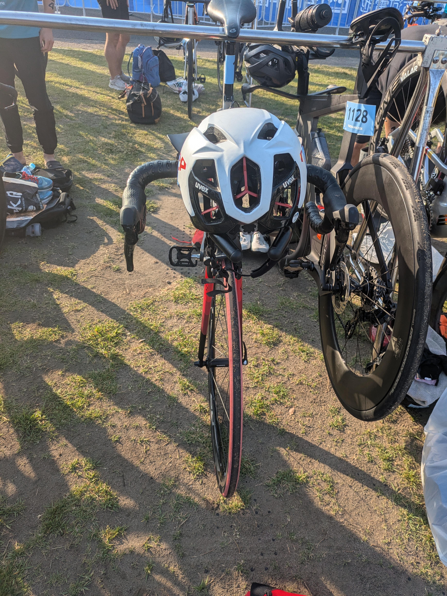

規定トルクで締めてもDHバーが滑る ─ ファイバーグリップで解決した話
前回のWTCS横浜2026 完走記の最後に、こんな伏線を残していました。
DHバーを始めてまともに使ったが完全にチート。でも、説明通り6N·m締めたのに段差で揺れるとバーの角度がずれる…（恐怖）。対策に ファイバーグリップ を買った。次回ライドで効果検証予定。
その回収編です。規定値まで締めているのに滑る ── このちょっと不安な問題を、あるアイテムで解決しました。同じくクリップオンDHバーがずれて困っている初心者の方の参考になればと思います。

症状：規定トルクで締めても滑る
使っているのはクリップオンタイプのDHバー、PROFILE DESIGN LEGACY II。普通のドロップハンドル（ベースバー）にクランプで挟んで固定します。

説明書どおり 6N·m で締めているのに、舗装の段差や荒れた路面で衝撃が入ると、エクステンション（肘から先を乗せて握る棒）の角度がジワッとずれる。エアロポジションは体重をかなり前に預けるので、走行中に「カクッ」と動くと正直こわい。
トルクレンチで規定値まで締めているのに、なぜ滑るのか。締めすぎは禁物（特にカーボンは割れる）。かといって緩いと滑る。トルク管理だけでは止めきれない滑り が、ここにはありました。
解決：ファイバーグリップ（摩擦ペースト）を塗る
やったことはシンプルです。
ファイバーグリップを 薄く塗って､規定トルク（6N·m）まで締め直しただけ
規定トルクまで締めなくても､かなり堅牢な状態になりました｡ローラー台で試したところ,感度良好｡ 体重をかけても､びくともしません(本来がっつり体重をかけて乗るものではないけど､念のため) これで､安心して､エアロポジションをとることができます｡
注意点を2つ。
- ざらざらした成分入りなので、位置を何度も付け直すと接触面に薄い擦り傷が残ることがある**（見た目だけの話で、強度には影響しません）。
- ペーストは 規定トルクの“代わり”ではなく“補助”。正規トルク＋ペースト の合わせ技が正解です。
補足：カーボン同士でなくても効く
ファイバーグリップは俗に「カーボングリス」「カーボンペースト」と呼ばれ、日本語の通販ページでも「カーボンパーツの滑り止め」と説明されがちです。実際、メーカーFINISH LINEの英語の公式説明も、主眼は クランプされたカーボン繊維面の滑り防止 に置かれています｡
私の場合DHバーもハンドルバーもアルミなので、接合面は アルミ × アルミ です。それでもファイバーグリップはしっかり機能しました。Amazonレビューでも同じ使い方をしている方を見かけたので､まぁ大丈夫だと思います(もちろん､最終的には自己責任で｡不安な方はアルミも使える､と明記されているこちらをオススメします｡ちょっと高いけど)
今後の検証：輪行で角度を変えるとき、塗り直しは必要か？
ひとつ未解決の疑問が残っています。輪行（電車などで運ぶために自転車を分解・収納すること）のときは、DHバーのクランプを緩めて角度を畳んだり戻したりします。このとき、そのたびにファイバーグリップを塗り直す必要があるのか？
現時点の仮説はこうです。
- グリットを 拭き取らない限り接触面に残る ので、角度を少し変えて締め直す程度なら、毎回の塗り直しは不要 かもしれない。
- ただし、付け直しを繰り返すと粒子が広がって 効きが落ちる 可能性、アルミ面に 擦り傷 が増える可能性がある。
- → 「1回塗れば輪行を繰り返しても持つのか」「都度塗り直しが要るのか」は、実際に輪行を挟んで走って確かめる予定。結果はこの記事に追記します。
まとめ
- DHバーが規定トルクでも滑るのは珍しくない。摩擦ペースト で解決できる。
- 滑り止めの正体は 研磨粒子の摩擦。カーボン用だが、アルミ × アルミでも有効。
- 輪行での塗り直しの要否は 今後の検証課題。
クリップオンDHバーは安価にエアロポジションを手に入れられる神アイテムですが、固定の信頼性は命に関わる部分。正しい方法でガッチリ留めて、安心して前傾していきましょう。
今回使ったもの
- DHバー本体：PROFILE DESIGN LEGACY II（鍛造6061-T6アルミ／クランプ31.8mm）
- 滑り止めペースト：FINISH LINE ファイバーグリップ 50g